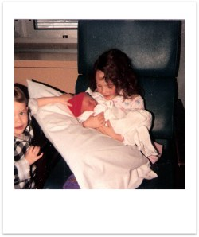
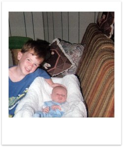
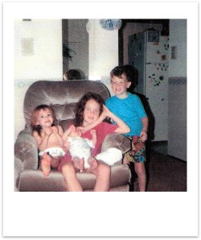
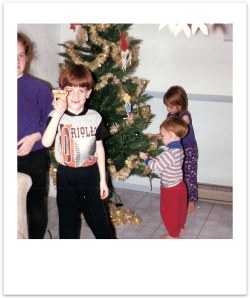
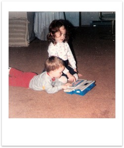

Early Childhood
As I look back at my childhood, especially early on, I definitely feel like everything in life revolved around my family. I see more clearly now how my parents created a very tight-knit, safe and loving environment for us all. My mother was a stay-at-home mom and so she has always been around, and my older sister Taylee was quite the little helper as well. She thought it was pretty cool to help out with the younger brother. She learned how to read at a very young age, and so hours were spent with her reading to me in my room. I loved it and would just soak it all in. We grew into really good friends and would play together a lot, and the same could be said of new siblings as they came along and grew old enough to play. Until we got older the four of us kids were all each other's best friends.
One of my earliest memories is when my sister Shawn was born in December of 1990, so I would have been about two and a half years old. I remember riding up the elevator in the hospital with my grandparents (on my Dad's side) to go and visit mom. I also remember holding Shawn in my lap as I sat on a couch. I remember it being a neat moment for me, holding my sister for the first time.
I also remember the birth of my brother Jace on July, 7 1993; so I would have been 5 years old. Just before he was born my uncle Lee was being married, so my grandparents came to pick us up and bring us with them to the wedding in Indiana. For some reason I remember that for the drive my Grandma had packed us little bagged lunches, and I was excited to eat the fruit gummies. I can't recall much about the wedding itself, but I remember that a relative pulled me onto the dance floor at the reception, and they got a kick out of my dance moves. After the wedding was through we traveled home, and I remember the excitement of walking inside and seeing Jace for the first time.
 There are so many fun things that we would do together as kids, all kinds of creative games that we invented. We were always playing with legos, and Taylee and I invented these characters we would build who would go on adventures. Hers was named Maria, and for whatever reason mine was named “Dad,” but apparently he wasn't actually Maria's dad. I honestly can't remember how or why that came about. We held on to those legos for years, and would use them with all of our other toys to make houses, cars, planes, or whatever else for them.
I remember that we were a pretty rambunctious group, always running and wrestling around or playing some kind of sport outside or inside the house. We'd invent our own variations of tag, have pillow wars, try to navigate around the house without touching the ground, have dance parties, races, and all kinds of random competitions.
Another of our favorite things to do was build forts in the living room. I'm sure that was a favorite for most kids. We had a bunch of huge blankets that we would drape over the furniture, and we'd build some absolutely beautiful architectural masterpieces. Sometimes they'd span the entire living room and into the kitchen, and we also had a “volcano design” where we'd take three chairs from the dining room and turn their backs to each other and wrap a blanket around them. We'd have all kinds of imaginary adventures inside and around our blanket palaces or volcanoes.  
More often then not the games we would play as kids would be all about our imaginations. We would pretend we were animals, or characters from whatever our favorite T.V. show at the time was, or just invent our own characters and stories. I can hardly remember most of the shows we watched, but I know there was one called “Pirates of Dark Water,” and then “G-Force,” and dozens of other “favorites.”
It seemed like most everything we did as kids would be turned into a game, whether we were cleaning up our toys, eating, getting ready for bed, taking a bath, or whatever else. For example we invented this game with M & M's where we'd take a couple of them and slide them against each other, and then whichever one fell off the table would get eaten first. We would pick out a particular color and claim that one as our favorite and root for it throughout the competition. There were millions of goofy little games like this, but they made for a childhood that was constantly fun.
Funny Stories from Early Childhood
One of my mom's favorite funny stories when I was kid happened when I was four years old. As she describes, she was watching some show similar to Entertainment Tonight on television, and they were doing a segment on some actress or model. As I walked into the room they showed a clip of the woman wearing just a bikini, riding a horse in slow motion. My mother hurried to try and change the channel but for whatever reason had trouble with remote control. I sat and stared at the TV, and said “Woah...look at that big horse.” My mother roared with laughter and explained how relieved she was that I was four and not fourteen.
Another favorite was around the same time; Taylee was off at school and so Mom spent some time teaching me how to read. We were down in the basement practicing on this little chalkboard, and mom was trying to help me sound out the word “cat.” She slowly sounded out each letter for me, and then would sound them out closer and closer together, and then invited me to try. I made the sounds myself over and over again, to the point where I was almost saying the word, and then blurted out “Attic!?” Somehow the sounds jumbled together and thats what I came up with, and so again everyone got a good laugh.
Continue to "Memories of Stonehenge Drive" >>